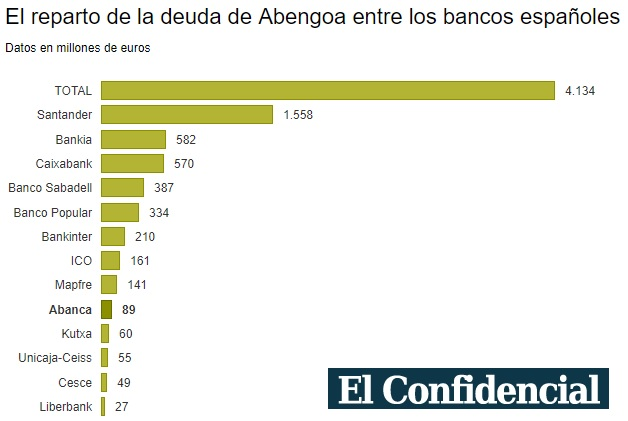
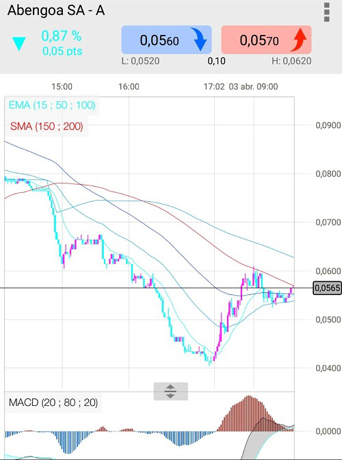
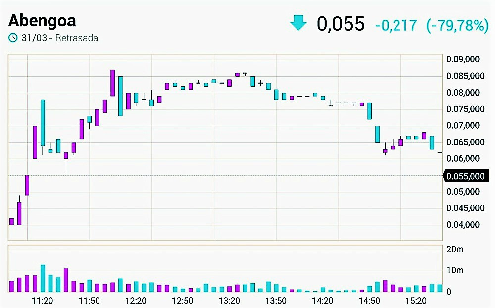
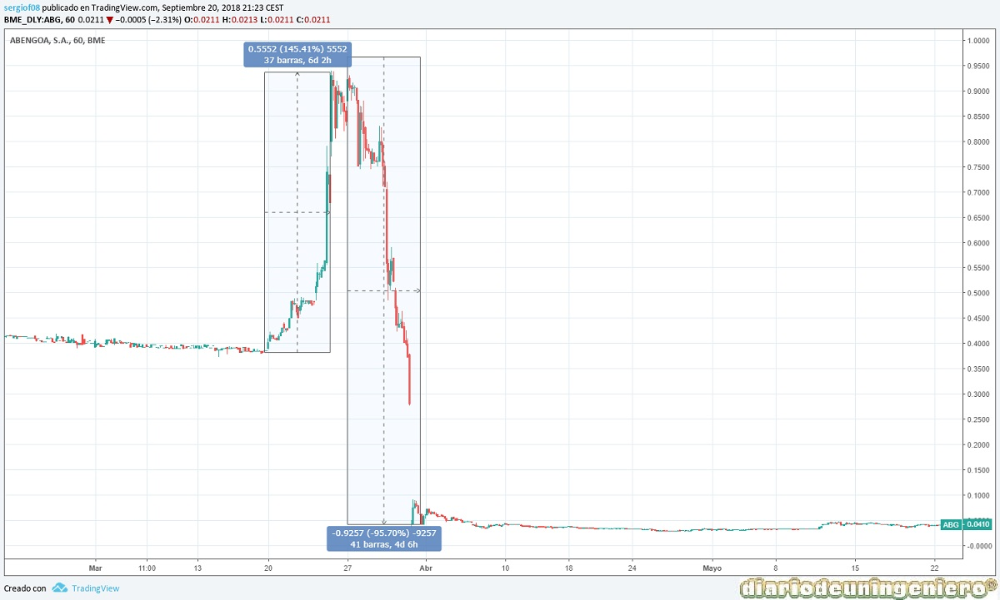
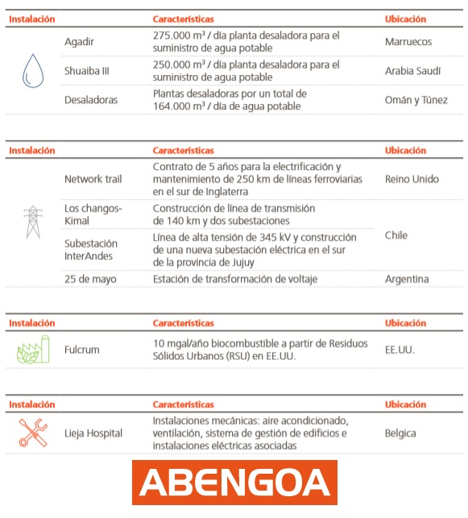

In 2015, the company would enter its minimum price after uncovering the huge debt of its entire business structure. Abengoa had become a technological giant and an international reference in renewable energies. Specifically in the thermosolar branch.
After some bad results in 2014 the company had already been heavily punished on the stock market, going from 4 euros to 2 euros. But the worst was to come because a year later, in the summer of 2015, it would go from 3 euros to the euro and would continue to fall progressively until reaching 0.34 euros.
After announcing bankruptcy were several interested in taking over the company but the refusal of banks to regain a new credit disappeared any interested. The largest and most likely, Gestamp, which had planned to make a takeover for the whole company by 300 million.
And is that the company has a lot of value because despite a huge debt, over 10,000 million gross had many buildings, projects on site and subsidiaries. The subsidiary with the highest net operating profit is in the United States under the name of Abengoa Yield, ABY. Its value then was much higher than 1000 million euros.

Counting all the assets of the company and projects the sales figure could give about 6,000 million that does not reach a quarter of the money that the creditors have, hence the first preference that the company go ahead and recover its investment and secondly not lose more money, that is, not grant more credits.
Finally, the company along with the banks would devise a strategic plan to be able to move the company forward and in 2020 start to give benefits. This plan would be to throw out of the company all those involved in the disaster. That is, Felipe Benjumea would be banished from society and his ex-advisors.
After having led to bankruptcy I wanted to continue in command and when I could not ask for compensation from the multibillion-dollar company. This compensation would be required in the courts for obvious reasons. The most harmed, Banco Santander for its investment in that company would be one of the whips of Benjumea and not least since in addition to lies there would be a very bad relationship between the family and the almighty president of Santander, Emilio Botín.
In February 2017 the agreement of 94% of the creditors took place, having incorporated 8% with respect to the previous year. Through the agreement, the creditors' contest that could have become the largest in the history of Spain was cleared. For this purpose, a debt reduction with 97% of the banks would be granted , with 3% remaining to be paid, approximately 2,000 million gross.
In the new Abengoa the holders of the old shares would see their value reduced by 95% due to a dilution of the shareholding power.
The group of banks that supported the restructuring plan were the following:

After the agreement of acreedors the value of the share suffered a spectacular rise exceeding the euro, that is, doubling its value in just two days. This was due to the accumulation of the few shares that were for sale by the banks that owned shares, Santander among others and then later knock down the stock in a lightning distribution. A effect called was created for the quote, accepting the agreement when the path that Abengoa would have to travel would be long and complicated. The next one on the right shows Abengoa A's price on the day after the quote.
To this distribution we add a large number of funds that would fall short in value making the punishment even more suffered. It is not known if the CNMV played a role in this network that will still be investigated in the future. In this way, the shares of Abengoa A would fall from 0.87 € to 0.20 € the next day and shares abengoa B from 0.21 € to 0.10 € respectively.
On the day of the dilution, the new shares came out with an exit price of 0.04 € for Abengoa A and 2 0.02 € for Abengoa B. Very quickly the price would be 0.10 € and 0.05 € and for half a session it would be 0.06 € for the A and 0.03 € for the B.
The action would be paralyzed because when the volume exceeded the 16,000 million shares B that would come out.

From there there was a slow distribution to what the people who were going to bet on those prices, to a capitalization close to 500 million, wondered why the price of a company that had been around 300 million for two years was still falling.
In the lower image, the price is paid on the days before and after the dilution. As you can see in the image the rise of the two days before the dilution is 156% and the decrease is twice the rise corresponding to a 95% drop . Capitalization, on the other hand, would rise from 190 million in the months prior to the restructuring to 350 million after the dilution.

The answer was quite difficult to assume. The banks that had lost a lot of money with the ransom were selling their donated shares to have less losses and as it could be believed that those banks that had authorized the rescue did not trust the new company and its market value. The first bank to sell its stake was Caixabank, which would be followed by other banks but selling part of the stake. The Santander bank, which had the most money invested in Abengoa, had 9% of the total capital with the new shares. Well, at the end of the year it would not have more than 3%, a value from which it must inform the CNMV of the holding of shares. The rest of the banks would do the same, leaving most of the shares in foreign investment funds, in funds associated with these banks and in retailers, these being the ones who owned most of the shares.
Thus, leaving Abengoa without any owner or any person who had deposited the trust would navigate throughout 2017 where the weight passed from the creditors to the bondholders who had put the new money for the rescue. Thus the Abengoa bonds would be worth half. Specifically from 16 euros to 8 euros. Although following new results and the announcement of the sale of Abengoa Yield would be worth double, reaching 16 euros new.
From the agreement of the initial creditors' meeting, it would almost become 97% of the total votes , but there will be a group of unruly creditors who would claim Abengoa in the courts. The judge's order would take almost 6 months to arrive and would arrive at the end of September. In the would give the reason to the impugnant but in an ambiguous way would not put date or amount while still in negotiations 1 year later. The list of objectors is the following:
In November 2015 it would be decided that the new president of the entity would be Gonzalo Urquijo , a businessman with a high reputation whose most recent achievements have been the management of Arcelor Mittal, a company with serious financial problems that managed to recover the old volume of business and triple its value in the stock market from minimums.
He has been preferred by banks and creditors but he distances himself from them by saying that he will save the company more for his career than for any agreement he has with them. Being in his last years of working life, after 55 years and with an impeccable career, it would be the finishing touch. Economic ambition is the least since there are many better offers than the one he received from Abengoa, although it would be a personal challenge for him.
One of the most important signs of the new Abengoa is the change of direction of the sector where it worked. If before he did it focused on solar energy, in this new stage he will do it in water, waste management and installations and electrical transmissions. The star sector is the desalination and is that in this new millennium water will be the product with more value on earth. In addition, Abengoa will not only keep the construction contracts for the plants, but will have to maintain those plants in their useful life, so the contracts will live in time.
Firstly, we could think that we have enough water in ponds, rivers and reservoirs but it is not like that since every time it is needed for more applications not only for human consumption or for irrigation. In addition emerging countries in Africa or the Near East do not have much more water than the sea. They are also powerful economies due to the exploitation of natural resources such as oil, gas or other minerals. Seen like that the idea was more than promising, and time will be right.
In spite of the new contracts that would be forged, whether from South America with power plants and transmission lines or Morocco, Tunisia or the Arabian Peninsula with desalination plants it was necessary to sell assets to finance the new projects.
Besides money for the financing of new projects it would be necessary to pay the new money to the bondholders, the 1200 million euros. That money has an annual interest of 20% so it is urgent to pay the debt.
For this, Abengoa has two star assets:
Abengoa would close in the summer of 2017 the 26% of Abengoa Yield of 42% that it had by 604 million dollars . In April of this year it would announce the sale of the remaining 16% for 345 million dollars.
The cogeneration plant in Mexico or the third train also called A3T is still pending sale before 2019.
The approximate value of the new contracts signed in 2017 is € 1400 million , of which Morocco desalination stands out for a total of 307 million and that of Saudi Arabia for 240 million.

© 2016 - All Rights Reserved - Diseñada por Sergio López Martínez
![[Valid RSS]](https://www.feedvalidator.org/images/valid-rss-rogers.png "Validate my RSS feed")